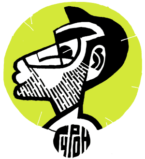

ГУРОНУ 40
Открытое письмо
Я сегодня коротко. Не взяли меня поздравить Гурона, ну да ничего — у меня для такого случая есть своя колонка. Упустить такой случай я никак не могу. Потому Гурон — это наше* все. Как говорил когда-то кто-то о совсем другом полном достоинств человеке: его не надо любить (хор: Опа!), его не надо уважать (хор: !?!) — его надо пред-по-чи-тать!
* Под словом «наше» я в данном случае подразумеваю следующее. Это, может быть, очевидно, но, почитав здесь и у соседей (да, я знаю, что разумнее этого не делать) комментарии, я все-таки решил сказать. Я нахожусь в приятном плену того представления, возможно ошибочного, что журнал [kАk) уже одним тем, что наряжается во Влада Васильева, ненавязчиво, но доходчиво описывает некий близкий ему набор ценностей и ориентиров, специфическую, можно сказать, философию (в рамках которой возможна, в частности, моя колонка), предпочитающую драйв - профессионализму, точность - «качеству», здоровое разгильдяйство - корпоративным ценностям, и Остенгруппе — сами знаете кому. И, стало быть, если читателю необходим совет по вылизыванию рефлексов в пейнтере или же доказательства того, что, скажем, тот же Гурович, обошедшийся двумя-тремя штрихами на плакат, способен выполнить его же в масле, прошу нижайше «нас» извинить.
Игорь, я знаю, что ты это прочитаешь, так что вот, запоздало, но держи от меня тоже.
